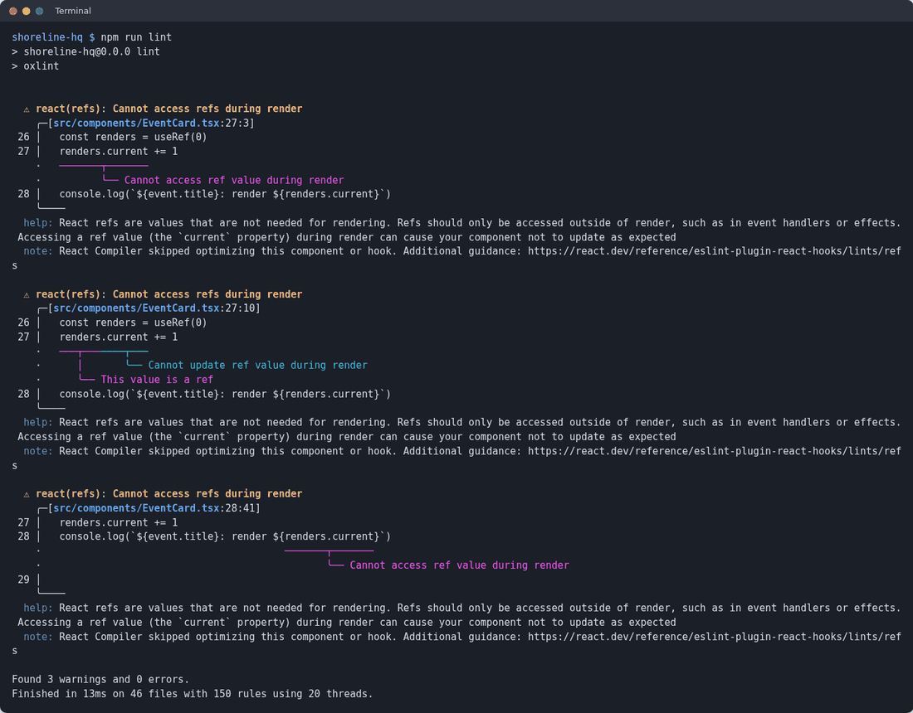
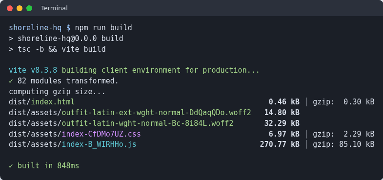

⚡ Lesson 5.3: Rendering Performance
Type "pelican" into the HQ's search box and nothing feels slow. Behind the screen, though, React called 560 component functions before the API had even answered, and drew the same fifteen cleanup cards seven times over. Today you learn to see that work, to measure it instead of guessing, and to remove what is wasted: by hand with memo, useMemo and useCallback, and then with the React Compiler, which writes most of that code for you. Every number in this lesson was measured on the HQ you have built, and you will measure your own.
🎯 Learning Objectives
By the end of this lesson, you will be able to:
- Name the three reasons a component renders, and explain why rendering is not the same as changing the page
- Measure renders with the React DevTools Profiler and React's
<Profiler>component before you change anything - Use
memo,useMemoanduseCallbackwith their TypeScript types, and recognize when they only add noise - Keep a context value from rendering every reader again when nothing in it changed
- Turn on the React Compiler in a Vite 8 project, check what it optimized, and decide what you still write by hand
📦 Code for this lesson
Starting code: lesson-19-start.zip · Finished code: lesson-19-end.zip. Each folder has a README with the commands to run it. Copy .env.example to .env.local in shoreline-hq before npm run dev.
In This Lesson
🌊 When React Renders
In Lesson 3.1 you learned that React draws the screen from data: a component is a function, and rendering means React calls that function to find out what the screen should look like now. A component renders again for exactly three reasons:
| Reason | In the HQ |
|---|---|
Its own state changed (a set… call or a dispatch) | Typing in the search box calls setQuery, so EventsPage renders |
| Its parent rendered and created it again | EventsPage renders, so EventGroups, two or three EventLists (three for organizers) and every EventCard below render too |
| A context it reads changed | Signing out changes AuthContext, so every component that calls useAuth() renders |
The second reason is the one that adds up. Here is what one key press in the search box sets off:
Measured on the HQ from Lesson 5.2, as a guest: typing pelican (seven keys, faster than the 300 ms debounce) made React commit seven times and call 560 component functions, 80 per key: EventsPage, EventFilters, EventGroups, two EventLists and, fifteen times each, EventCard, StatusBadge, Badge, SpotsLine and VisuallyHidden. When the debounced search and then the API's answer arrived, two more commits brought the total to 660. Signed in as Maya (17 cleanups, a Drafts list), the same typing took 693 calls before the answer and 814 in all.
And yet the page itself barely changed while you typed. React works in two phases: render (call the components, compare their output with last time) and commit (change the DOM where the output differs). Measured with a MutationObserver watching the page: during the seven key presses, React added the Clear filters button and updated the search box, and not one element inside the fifteen cards changed. All that rendering produced the same cards it already had.
💡 Mental model: the tide chart
Each render is the crew lead redrawing the whole tide chart from the latest readings, then holding it next to the one on the wall and only repainting the lines that moved. Redrawing is usually quick, so React does it freely and you rarely notice. Performance work is noticing when the redrawing itself gets expensive, a big chart redrawn on every key press, and arranging for the parts that cannot have changed to be skipped.
💡 Why this matters
Re-rendering is not a bug: it is how React stays correct, and most apps never need more than that. But lists grow, phones are slower than your laptop, and "the search box lags on my phone" is a real bug report on a real team. The skill employers look for is not sprinkling memo everywhere; it is measuring, finding the one place that matters, and fixing it with the smallest change. That habit is what this lesson builds.
📏 Measure First
Guessing which component is slow is a coin toss; measuring takes two minutes. You have two tools.
The React DevTools Profiler
The React Developer Tools browser extension (free, for Chrome, Edge and Firefox; you met its Components tab in Lesson 3.1) adds a Profiler tab to the browser's DevTools. Open your app on the dev server, press F12 (⌘ Cmd+Option+I on a Mac), choose Profiler, click the round record button, do the thing you want to measure, and click it again to stop. You get:
- one bar per commit at the top (seven key presses, seven bars);
- a flame graph per commit: every component that rendered, colored by how long it took, and the ones that did not render shown in gray;
- a Ranked view that sorts the components by render time, slowest first.
Two settings (the gear icon in the React DevTools panel) are worth turning on: Highlight updates when components render, which flashes a box around each component as it renders, so you can see the whole event list light up on every key; and Record why each component rendered while profiling, which adds "Why did this render?" (for example "The parent component rendered" or "Context changed") to each component in the flame graph. The extension works on the dev server; on a production build it shows minified names, and profiling a build needs a special profiling build of React.
The <Profiler> component
React also has a component for measuring from code, which is handy when you want numbers in the console, or in a test, without clicking. Wrap a part of the tree and give it a callback:
// Temporary: how long each render of the list took
const logRender: ProfilerOnRenderCallback = (id, phase, actualDuration) => {
console.log(`${id} ${phase}: ${actualDuration.toFixed(1)} ms`)
}<Profiler id="EventGroups" onRender={logRender}>
<EventGroups
events={events.state.data.items}
sites={sites.state.data}
filtering={search !== '' || status !== 'all'}
showDrafts={isOrganizer}
/>
</Profiler>ProfilerOnRenderCallbackis the callback's type from@types/react: annotate the variable and TypeScript infers every parameter (id: string,phase: 'mount' | 'update' | 'nested-update',actualDuration: numberand three more you can ignore for now).- React calls it after every commit in which something inside the
<Profiler>rendered.actualDurationis the time, in milliseconds, spent rendering that part of the tree in that commit. - It only reports in development. Measured: the same code in
npm run build+npm run previewprinted nothing at all, because production builds of React leave the profiling out.
You will add exactly this in the project's Step 1. Measured on the dev server while typing pelican: one line per key press, each between 6 and 9 ms. With Chrome's CPU throttled to 4 times slower (DevTools, Performance panel, CPU: 4x slowdown, a common stand-in for a slower phone), every key press took 29 to 35 ms. A screen has about 16 ms to draw each frame, so that is the point where typing can start to feel sticky.
⚠️ Development numbers are not production numbers
The dev server runs React's development build, which checks more and, in Strict Mode, calls every component twice per render. Production is faster. So use development timings to compare (before and after a change, on the same computer), not as a promise about real users. Render counts are the same in both. Every count in this lesson was recorded after each commit from the same information the DevTools Profiler shows (which components React actually called), on the dev server and on the build, and they matched.
🧷 memo and useCallback: Skipping a Component
memo wraps a component and tells React: if the parent renders but every prop is the same as last time, skip this component and reuse what it drew before. "The same" means Object.is for each prop: equal for strings, numbers and booleans, but for objects, arrays and functions only if it is the same object, not just one that looks alike. Here is a small experiment, a crew note box above a list of supplies. Put it in src/Scratch.tsx and show it from CurrentPage as you did in Lesson 5.2:
import { memo, useState } from 'react'
interface SupplyListProps {
supplies: string[]
onRemove: (supply: string) => void
}
// memo: React skips this list when every prop is the same as last time
const SupplyList = memo(function SupplyList({ supplies, onRemove }: SupplyListProps) {
return (
<ul>
{supplies.map((supply) => (
<li key={supply}>
{supply}{' '}
<button type="button" onClick={() => onRemove(supply)}>
Remove {supply}
</button>
</li>
))}
</ul>
)
})
export function SupplyPlanner() {
const [note, setNote] = useState('')
const [supplies, setSupplies] = useState(['Gloves', 'Bags', 'Grabbers'])
function removeSupply(supply: string) {
setSupplies((current) => current.filter((item) => item !== supply))
}
return (
<>
<label htmlFor="note">Note for the crew</label>
<input id="note" value={note} onChange={(event) => setNote(event.target.value)} />
<SupplyList supplies={supplies} onRemove={removeSupply} />
</>
)
}TypeScript-wise, memo keeps the props type of the function you give it: SupplyList still takes SupplyListProps, and passing a wrong prop is still a type error. Writing the function with a name inside memo(function SupplyList…) keeps that name in error messages and in the Profiler.
Now type gloves into the note. Measured: six key presses, and SupplyList rendered six times anyway, memo or not. Why? supplies is the same array every time, but removeSupply is a new function on every render of SupplyPlanner, so memo sees a changed prop and renders.
useCallback keeps the same function between renders until something in its dependency array changes:
// The same function on every render, so SupplyList's props stay the same
const removeSupply = useCallback((supply: string) => {
setSupplies((current) => current.filter((item) => item !== supply))
}, [])The updater form setSupplies((current) => …) means the function needs nothing from the render it was created in, so its dependency array is empty and it can stay the same forever. Its type is inferred from the function: (supply: string) => void, exactly what onRemove expects. Measured: typing gloves now rendered SupplyPlanner six times and SupplyList zero times; removing Gloves and then Bags still worked and left only Grabbers.
💡 The pair rule
useCallback on its own does nothing useful: a stable function only matters to someone who compares it, such as a memo component or an effect's dependency array. memo on its own fails as soon as one prop is a fresh object or function. They work as a pair, which is why hand-written memoization spreads through a codebase so quickly.
🧮 useMemo: Skipping a Calculation
memo skips a whole component. Sometimes the component has to render, but one expensive calculation inside it does not have to run again. Imagine a report screen with 100,000 debris log entries and a note box:
import { useState } from 'react'
interface DebrisLog {
category: 'plastic' | 'glass'
kg: number
}
// 100,000 made-up log entries, standing in for a big list from an API
const sampleLogs: DebrisLog[] = Array.from({ length: 100_000 }, (_, index) => ({
category: index % 3 === 0 ? 'glass' : 'plastic',
kg: ((index * 7919) % 1000) / 100,
}))
// The heaviest entries first: sorting 100,000 items takes real time
function heaviest(logs: DebrisLog[], count: number): DebrisLog[] {
return logs.toSorted((a, b) => b.kg - a.kg).slice(0, count)
}
function DebrisReport({ logs }: { logs: DebrisLog[] }) {
const [note, setNote] = useState('')
const top = heaviest(logs, 3)
return (
<>
<label htmlFor="report-note">Note for the report</label>
<input id="report-note" value={note} onChange={(event) => setNote(event.target.value)} />
<p>Heaviest finds: {top.map((log) => `${log.kg} kg of ${log.category}`).join(', ')}</p>
</>
)
}
export function DebrisDemo() {
return <DebrisReport logs={sampleLogs} />
}Every key press in the note renders DebrisReport, which sorts all 100,000 entries again to find the same three. Measured with the <Profiler> on the dev server: a median of 30 ms per key press. useMemo remembers a calculated value and only recalculates when a dependency changes:
// Sort again only when logs is a different array, not on every keystroke in the note
const top = useMemo(() => heaviest(logs, 3), [logs])Measured: 0.5 ms per key press. The result type is inferred from the function (DebrisLog[]), so nothing else changes. The dependency array plays the same role as an effect's: list every value from the component that the calculation reads. Lesson 4.1's react-hooks(exhaustive-deps) lint rule checks useMemo and useCallback too.
⚠️ Not for everything
Filtering 15 cleanups into three groups, as EventGroups does, takes well under a millisecond: wrapping it in useMemo would add code and a dependency array to keep right, and save nothing you could measure. Reach for useMemo when the Profiler shows a slow component, and keep the calculation pure: useMemo is a cache, and React may throw cached values away. Never put a side effect such as a fetch in it.
📡 Context Values That Stay Put
Lesson 5.2 left a note in AuthProvider: value={{ session, isOrganizer, signIn, signOut }} builds a new object on every render, "and Lesson 5.3 measures when it is not fine". Here it is. A units context, as in Lesson 5.2, with a provider whose parent has a note box:
function UnitProvider({ children }: { children: ReactNode }) {
const [unit, setUnit] = useState<WeightUnit>('kg')
function toggleUnit() {
setUnit((current) => (current === 'kg' ? 'lb' : 'kg'))
}
return <UnitContext value={{ unit, toggleUnit }}>{children}</UnitContext>
}
// memo, and no props at all: surely this never renders again?
const DayTotal = memo(function DayTotal() {
const { unit, toggleUnit } = useUnit()
return (
<p>
Collected today: {unit === 'kg' ? '42 kg' : '92 lb'}{' '}
<button type="button" onClick={toggleUnit}>
Switch units
</button>
</p>
)
})
export function CrewBoard() {
const [note, setNote] = useState('')
return (
<UnitProvider>
<label htmlFor="board-note">Note for the board</label>
<input id="board-note" value={note} onChange={(event) => setNote(event.target.value)} />
<DayTotal />
</UnitProvider>
)Type beach in the note. Measured: DayTotal rendered five times out of five. It is wrapped in memo and takes no props, but memo never blocks the third reason to render: when CrewBoard renders, UnitProvider renders (its children prop is new), builds a new value object, and every reader of the context renders, wherever it is. The fix is to make the value the same object until something in it really changes:
function UnitProvider({ children }: { children: ReactNode }) {
const [unit, setUnit] = useState<WeightUnit>('kg')
const toggleUnit = useCallback(() => {
setUnit((current) => (current === 'kg' ? 'lb' : 'kg'))
}, [])
// A new object only when unit changes, so readers skip renders that change nothing
const value = useMemo(() => ({ unit, toggleUnit }), [unit, toggleUnit])
return <UnitContext value={value}>{children}</UnitContext>
}Measured: typing beach rendered DayTotal zero times, and Switch units still rendered it once and showed "92 lb". Both pieces are needed: without useCallback, toggleUnit would be new on every render and so would the memoized value.
So is the HQ's AuthProvider a problem? Measured: signing out on the events page rendered AuthProvider once, and Header, Footer, AppLayout and App not at all. App never re-renders, so AuthProvider only renders when the session changes, and then its value should be new. The readers that rendered were the ones that read the context: UserMenu, EventsPage (through useAuth and useApi) and every EventCard, plus what they draw: 82 component calls in the sign-out's commit, before the API's answers brought the 15 public cleanups in later commits. The fix above matters when a provider sits under something that renders often.
🤖 The React Compiler
You have now seen the trouble with hand-written memoization: it comes in pairs, its dependency arrays have to be right, and one forgotten useCallback silently undoes a memo. The React Compiler does that work at build time. It reads each component and Hook, works out which values, functions and JSX depend on which props and state, and rewrites the code so each piece is cached and only rebuilt when its inputs change. You keep writing plain components; the browser gets the memoized version.
It is a separate build step, not part of React itself: in a Vite 8 project it runs as a Babel preset that @vitejs/plugin-react provides, through the @rolldown/plugin-babel plugin. New projects can start with it: npm create vite@latest offers a react-compiler-ts template, and the project's Step 3 sets up the HQ exactly the way that template does.
Measured with the compiler on, using the first versions of today's three experiments (no useCallback, no useMemo, the plain context value):
| Experiment | No compiler | No compiler, fixed by hand | Compiler, plain code |
|---|---|---|---|
SupplyList renders while typing gloves | 6 | 0 (useCallback) | 0 |
DayTotal renders while typing beach | 5 | 0 (useMemo + useCallback) | 0 |
DebrisReport, median per key press | 30 ms | 0.5 ms (useMemo) | 15 ms |
Two out of three solved without a single Hook. The third is the honest surprise. The compiler did cache the report, but it put the sort in the same cached block as the note's <input>, which depends on note, so every key press still sorted 100,000 entries. (It got faster than without the compiler only because Strict Mode's second call hit the cache.) With the explicit useMemo kept, the compiler respected it: 0.2 ms. The compiler is a very good assistant, not a guarantee, and the Profiler is how you find out which is which.
It only compiles code that follows the rules
The compiler assumes your components follow the Rules of React: render is pure (no reading the clock, no changing variables outside the component), props and state are never changed in place, and refs are not read while rendering. When a component breaks one, the compiler leaves that whole component exactly as you wrote it, silently. You already know the warnings: react(purity) from Lesson 3.1, react(immutability) from 3.2, react(refs) from 4.3 are the compiler's own checks, run by oxlint, and their notes say "React Compiler skipped optimizing this component or hook". Because the HQ has kept npm run lint at zero warnings, the compiler optimized every one of its 41 function components and Hooks (checked with the compiler's own log; ErrorBoundary is a class, and classes are never compiled).
What you still write by hand
| Still yours | Why |
|---|---|
| Pure components and zero lint warnings | A component the compiler skips gets no memoization at all |
State kept low, and stable keys | The compiler caches values; it cannot move state or fix a list that remounts |
useMemo for a calculation you measured as slow | As the report showed, the compiler may group it with something that changes more often |
memo, useMemo, useCallback in projects without the compiler | Most existing codebases; leave their memoization in place unless you measure |
| Debouncing, pagination, fewer requests | The slowest thing in the HQ is still the network, not React |
🧩 Version note: the compiler in older tutorials and in plugin-react
Older tutorials, written for earlier versions of @vitejs/plugin-react, put the compiler inside react({ babel: { plugins: […] } }). Version 6, which Vite 8 uses, has no babel option any more (see Common Mistakes for the error). plugin-react 6 also has an experimental react({ compiler: true }) option that runs a Rust port of the compiler (it needs the extra package oxc-transform-react); the course uses the Babel preset, which is what the react-compiler-ts template ships.
⚠️ Common Mistakes
⚠️ memo on everything, without measuring
memo costs a comparison of every prop on every parent render, and it is easy to defeat. A common case is a component that takes children:
// memo on a component that takes children
const Panel = memo(function Panel({ title, children }: { title: string; children: ReactNode }) {
return (
<section aria-label={title}>
<h2>{title}</h2>
{children}
</section>
)
})The JSX between <Panel> and </Panel> is a new object every time the parent renders. Measured without the compiler: typing rain in the parent's note rendered Panel four times out of four. It type-checks and lints cleanly; only a measurement shows that the memo does nothing. (With the compiler on, the parent's JSX is cached and Panel rendered zero times.)
⚠️ A missing dependency: the stale value
Here removeSupply reads supplies directly instead of using the updater form, and the dependency array stays empty:
const removeSupply = useCallback((supply: string) => {
setSupplies(supplies.filter((item) => item !== supply))
}, [])Expected output (npm run lint)
> shoreline-hq@0.0.0 lint
> oxlint
⚠ react-hooks(exhaustive-deps): React Hook useCallback has a missing dependency: 'supplies'
╭─[src/Scratch.tsx:31:6]
29 │ const removeSupply = useCallback((supply: string) => {
30 │ setSupplies(supplies.filter((item) => item !== supply))
· ────┬───
· ╰── useCallback uses `supplies` here
31 │ }, [])
· ──
32 │
╰────
help: Either include it or remove the dependency array.
Found 1 warning and 0 errors.
Finished in 17ms on 47 files with 150 rules using 20 threads.The function keeps the supplies from the first render forever. Measured: removing Gloves left "Bags, Grabbers", then removing Bags showed "Gloves, Grabbers": Gloves came back. Read the warning as a bug report, and prefer the updater form, which needs no dependency at all. The compiler does not rescue this one: its log said "Existing memoization could not be preserved" and it skipped the component.
⚠️ Counting renders with a ref
A tempting way to count renders is a ref that goes up by one each time:
// How many times has this card rendered?
const renders = useRef(0)
renders.current += 1
console.log(`${event.title}: render ${renders.current}`)
npm run lint reports it. Three warnings for three uses of renders.current while rendering, and each is also a reason for the React Compiler to skip the whole component.It is wrong twice. On the dev server it counts double, because Strict Mode calls the component twice per render (measured: one real render of each matching card printed "render 3" and then "render 4"). And reading renders.current while rendering breaks a rule, so the compiler skipped EventCard entirely. Measured with the compiler on: Show details went from 1 component render to 4, and the sign-out's commit on the events page from 19 to 64. Measure with the Profiler instead; it does not change what it measures.
⚠️ The compiler set up the old way
Copying an older tutorial's vite.config.ts, with react({ babel: { plugins: ['babel-plugin-react-compiler'] } }), gives:
Expected output (npx tsc -b)
vite.config.ts:8:7 - error TS2353: Object literal may only specify known properties, and 'babel' does not exist in type 'Options'.
8 babel: {
~~~~~
Found 1 error in vite.config.ts:8Options is plugin-react 6's options type, and it has no babel any more. TypeScript checks your config file too (it is part of tsconfig.node.json), which is how this mistake shows up before the build. Use the setup in Step 3.
🛠️ Project: Measure and Speed Up the Events Page
You will measure the search box on /events, fix the waste by hand, then turn on the React Compiler for the whole HQ and check that it does the same job (and more) without the hand-written code. At the end, the HQ builds with the compiler, and EventsPage.tsx is back to exactly what it was at the start of the lesson.
Start both servers (node server.ts in shoreline-api, npm run dev in shoreline-hq). If you tried the experiments, delete src/Scratch.tsx and the line you added to CurrentPage.

Step 1: Measure the search box (12 min)
In src/pages/EventsPage.tsx, change the first line to import Profiler and the callback's type:
import { Profiler, useEffect, useRef, useState, type ProfilerOnRenderCallback } from 'react'Add the logger above isTyping (it is temporary, so a short comment says so):
// Temporary: how long each render of the list took
const logRender: ProfilerOnRenderCallback = (id, phase, actualDuration) => {
console.log(`${id} ${phase}: ${actualDuration.toFixed(1)} ms`)
}and wrap <EventGroups> in the page's JSX:
{sites.state.kind === 'ready' && events.state.kind === 'ready' ? (
<Profiler id="EventGroups" onRender={logRender}>
<EventGroups
events={events.state.data.items}
sites={sites.state.data}
filtering={search !== '' || status !== 'all'}
showDrafts={isOrganizer}
/>
</Profiler>
) : (
<LoadStatus state={waiting.state} what="the cleanups" onRetry={waiting.reload} />
)}Open http://localhost:5173/events with the browser's Console open (F12, or ⌘ Cmd+Option+J in Chrome on a Mac). Click the search box, type pelican quickly and wait for "Found 3 cleanups". Measured on the course's computer (your times will differ; the number of lines will not):
Console
EventGroups update: 8.6 ms
EventGroups update: 8.3 ms
EventGroups update: 7.5 ms
EventGroups update: 6.5 ms
EventGroups update: 6.7 ms
EventGroups update: 6.8 ms
EventGroups update: 6.9 ms
EventGroups update: 8.8 ms
EventGroups update: 1.7 msSeven lines for seven keys, each re-rendering the whole list for nothing, then one when the debounced search starts and one when the answer arrives. If you have React DevTools, record the same typing in the Profiler tab: each of the first seven commits shows EventGroups and all its cards in color. With Highlight updates on, you can watch every card flash on every key.
Step 2: Skip the list with memo (8 min)
EventGroups gets four props: the events and sites from useApi (the same arrays until a new answer arrives), filtering and showDrafts (booleans that do not change while you type, because search is debounced). So memo can skip it. Add memo to the import:
import { memo, Profiler, useEffect, useRef, useState, type ProfilerOnRenderCallback } from 'react'and wrap the function (one line at the top, and }) instead of } at its end):
// The cleanups the API found, in three groups. memo: skipped when no prop changed
const EventGroups = memo(function EventGroups({
events,
sites,
filtering,
showDrafts,
}: EventGroupsProps) { </>
)
})EventGroups is now a constant holding a memoized component, and its props are still checked against EventGroupsProps. Reload, type pelican again:
Console
EventGroups update: 0.0 ms
EventGroups update: 0.0 ms
EventGroups update: 0.0 ms
EventGroups update: 0.0 ms
EventGroups update: 0.0 ms
EventGroups update: 0.0 ms
EventGroups update: 0.0 ms
EventGroups update: 8.8 ms
EventGroups update: 1.7 msThe <Profiler> still reports each commit (its parent rendered), but nothing inside it rendered: 0.0 ms. Measured with the render count: the seven key presses now cost 14 component calls (EventsPage and EventFilters, seven each) instead of 560, and the whole search 114 instead of 660. One line of code, a 97% cut where it mattered.
Step 3: Turn on the React Compiler (10 min)
First, note what the build looks like without it. In the second terminal, stop the dev server (Ctrl+C, also on a Mac) and run:
npm run buildExpected output (sizes from the course's run; the time will differ)
> shoreline-hq@0.0.0 build
> tsc -b && vite build
vite v8.3.8 building client environment for production...
✓ 80 modules transformed.
computing gzip size...
dist/index.html 0.46 kB │ gzip: 0.30 kB
dist/assets/outfit-latin-ext-wght-normal-DdQaqQDo.woff2 14.80 kB
dist/assets/outfit-latin-wght-normal-Bc-8i84L.woff2 32.29 kB
dist/assets/index-CfDMo7UZ.css 6.97 kB │ gzip: 2.29 kB
dist/assets/index-6OdvjMRn.js 252.23 kB │ gzip: 78.51 kB
✓ built in 142msNow install the compiler and the two pieces Vite needs to run it, as development dependencies (they run at build time only):
npm install --save-dev babel-plugin-react-compiler @rolldown/plugin-babel @babel/core@7 @types/babel__coreExpected output
added 45 packages, and audited 75 packages in 3s
15 packages are looking for funding
run `npm fund` for details
found 0 vulnerabilities@babel/core@7 asks for the newest Babel 7, the major version the react-compiler-ts template uses (Babel 8 is newer; the course was checked with 7). @types/babel__core gives TypeScript the types the Babel plugin's options refer to. The course was checked with these versions in package.json:
"devDependencies": {
"@babel/core": "^7.29.13",
"@rolldown/plugin-babel": "^0.3.1",
"@types/babel__core": "^7.20.5",
"@types/node": "^24.19.2",
"@types/react": "^19.3.0",
"@types/react-dom": "^19.3.0",
"@vitejs/plugin-react": "^6.1.2",
"babel-plugin-react-compiler": "^1.0.0",
"oxlint": "^1.90.0",
"typescript": "~7.0.2",
"vite": "^8.3.6"Then replace vite.config.ts:
import react, { reactCompilerPreset } from '@vitejs/plugin-react'
import babel from '@rolldown/plugin-babel'
import { defineConfig } from 'vite'
// https://vite.dev/config/
export default defineConfig({
plugins: [
react(),
// The React Compiler: works out what each component can reuse between renders
babel({ presets: [reactCompilerPreset()] }),
],
})react() stays (it compiles TSX and runs Fast Refresh); babel(…) adds a second pass that runs only the compiler preset over your source files. Build again:
npm run buildExpected output
> shoreline-hq@0.0.0 build
> tsc -b && vite build
vite v8.3.8 building client environment for production...
✓ 82 modules transformed.
computing gzip size...
dist/index.html 0.46 kB │ gzip: 0.30 kB
dist/assets/outfit-latin-ext-wght-normal-DdQaqQDo.woff2 14.80 kB
dist/assets/outfit-latin-wght-normal-Bc-8i84L.woff2 32.29 kB
dist/assets/index-CfDMo7UZ.css 6.97 kB │ gzip: 2.29 kB
dist/assets/index-B_WIRHHo.js 270.77 kB │ gzip: 85.10 kB
✓ built in 853ms
The price, measured: two more modules (React's small compiler runtime), 18.5 kB more JavaScript (6.6 kB gzipped, the size that travels over the network), and a build that took 0.85 s instead of 0.14 s on the course's computer. Start the dev server again with npm run dev.
Step 4: Let the compiler do it (10 min)
Reload /events and type pelican once more, with Step 2's memo still in place. Then take the memo out again (back to function EventGroups(…) {, the closing }, and memo removed from the import) and repeat. Measured, both ways, the console showed only two lines, for example:
Console
EventGroups update: 0.1 ms
EventGroups update: 0.7 msNo line at all while typing: the compiler cached the whole <Profiler> element in EventsPage, so React did not even visit it. The render counts, measured on the dev server and on the build:
| Component renders | Lesson 5.2's code | memo(EventGroups) | Compiler, no memo |
|---|---|---|---|
Typing pelican, before the answer | 560 | 14 | 14 |
| The whole search, answer included | 660 | 114 | 28 |
| Show details on one card | 5 | 5 | 1 |
Signing out on /events as Maya (the sign-out's own commit) | 82 | 82 | 19 |
| Check in one volunteer on the desk | 23 | 23 | 23 |
The compiler matched the hand-written memo where you put it and went further everywhere else: when Show details opens a card, the card's badges and spots line are cached; when Maya signs out, the cards must render (they read the context), but everything inside them is reused. The check-in desk stayed at 23: the roster's rows are drawn inside one .map that depends on all the marks (Exercise 3 looks at it).
Decision for the HQ: the compiler stays on, and the hand-written memo goes. It removed far more wasted work than one memo, cost a few kilobytes and under a second of build time, and every component in the HQ already follows the rules it needs. Now remove the measuring code: in EventsPage.tsx, delete logRender, put <EventGroups … /> back without the <Profiler> around it, and restore the first line:
import { useEffect, useRef, useState } from 'react'
// ...
// The cleanups the API found, in three groups
function EventGroups({ events, sites, filtering, showDrafts }: EventGroupsProps) {The file is now exactly the one Lesson 5.2 left you: the speed-up lives in vite.config.ts, not in your components.
Step 5: Check it, then try the edges (6 min)
npx tsc -b
npm run lintExpected output (npm run lint)
> shoreline-hq@0.0.0 lint
> oxlint
Found 0 warnings and 0 errors.
Finished in 15ms on 46 files with 150 rules using 20 threads.Then use the app as an organizer once: sign in as Maya, search, open details, cancel a cleanup in the dialog (Keep it), open Tide Pool Morning Cleanup and check someone in, sign out. Everything behaves exactly as before; that is the point. The compiler changes how often React does work, never what the app does, as long as the components follow the rules.
Your own project: pick the screen of your Lesson 11.1 idea that will hold the longest list or the most typing. Write down what you would measure on it (which action, which component, what count or time would worry you), so that you measure before you optimize when you get there.
✅ Project Completion Checklist
- ☐ You measured the search box with
<Profiler>and saw one log line per key press - ☐
memo(EventGroups)brought those renders to 0.0 ms, and you can say why it worked - ☐
babel-plugin-react-compiler,@rolldown/plugin-babel,@babel/coreand@types/babel__coreare dev dependencies, andvite.config.tsrunsreactCompilerPreset() - ☐ With the compiler on and the
memoremoved, typing no longer re-renders the list - ☐
EventsPage.tsxhas noProfiler,logRenderormemoleft, andsrc/Scratch.tsxis deleted - ☐
npx tsc -b,npm run lintandnpm run buildpass
🏋️ Hands-on Exercises
Exercises 1 and 2 are part of the lesson (about 15 minutes together, included in the lesson time).
🏋️ Exercise 1: Predict a sign-out
Without running anything, answer for the HQ without the compiler (Lesson 5.2's code), then with it: when Maya presses Sign out on /events, which of these render: Header, UserMenu, Footer, EventsPage, EventCard, StatusBadge? Why do the cards still render with the compiler on? Then check with the React DevTools Profiler (record, Sign out, stop) and compare with the solution.
💡 Hint
Go through the three reasons for each component. Which ones call useAuth() themselves or through useApi? And can any amount of memoization stop the third reason?
✅ Solution
Measured in the sign-out's own commit, before the API answered: without the compiler, AuthProvider, UserMenu, EventsPage, EventFilters, EventGroups, two EventLists and 15 EventCards with everything they draw, including StatusBadge: 82 component calls. Header, Footer, AppLayout and App did not render: they do not read the context, and AuthProvider's children are the same elements App created once. With the compiler: 19 (AuthProvider, UserMenu, EventsPage, EventGroups and the 15 cards). The cards still render, because they call useAuth() and the context really changed (the third reason, which memo never blocks), but inside each card the badges, spots line and buttons were reused. When the API's answers arrive a moment later, the new event objects render the cards' contents again.
🏋️ Exercise 2: Opt one component out
The compiler has an escape hatch: the directive 'use no memo' as the first statement of a function leaves that function as you wrote it. Add it to EventsPage, then record typing pelican in the React DevTools Profiler. Predict first: does the whole list render again on every key, as in Step 1?
💡 Hint
The directive switches off the compiler for EventsPage only. EventGroups is a separate function in the same file.
✅ Solution
export function EventsPage() {
'use no memo'
const { isOrganizer } = useAuth()Measured: during the typing, 21 component renders, not 560: EventsPage, EventFilters and EventGroups seven times each. Without the compiler in EventsPage, nothing caches the <EventGroups> element, so it renders; but EventGroups itself is still compiled, so its lists and cards are reused. The compiler works one function at a time, and the directive is for the rare component you need to debug or that misbehaves when compiled. Remove it again.
🏋️ Exercise 3: A row component for the desk (Stretch)
Optional stretch, not counted in the lesson time (about 20 minutes).
Checking in one volunteer renders 23 components with or without the compiler, because RosterTable draws every row inside one .map that depends on all the marks. Move one row into its own component, RosterTableRow, in RosterTable.tsx, with props entry, mark (Mark | undefined) and dispatch. Predict how many components render for one check-in now, then measure with the Profiler.
💡 Hint
Each row component gets its own mark, so inside it the compiler can cache the badge and the buttons per row. Does the row component itself still render when its parent maps over the entries again?
✅ Solution
Move the <tr> and everything in it into the new component, and map to it:
interface RosterTableRowProps {
entry: RosterRow
mark: Mark | undefined
dispatch: (action: RosterAction) => void
}
// One volunteer's row: its own component, so it can keep its own memoized parts
function RosterTableRow({ entry, mark, dispatch }: RosterTableRowProps) {
const signupId = entry.id
const { label, tone } = markBadges[mark ?? 'expected']
return (
// ...
export function RosterTable({ entries, marks, dispatch }: RosterTableProps) {
return (
<table className={styles.table}>
<thead>
<tr>
<th scope="col">Volunteer</th>
<th scope="col">Check-in</th>
</tr>
</thead>
<tbody>
{entries.map((entry) => (
<RosterTableRow
key={entry.id}
entry={entry}
mark={marks.get(entry.id)}
dispatch={dispatch}
/>
))}
</tbody>
</table>
)
}Measured with the compiler: 10 instead of 23 (CheckInDesk, RosterTable, seven RosterTableRows and one Badge). The rows still render, because the compiler caches values and JSX but does not wrap components in memo, and RosterTable builds new row elements when the marks change; inside six of the seven rows, though, nothing changed, so their badges and buttons were reused. Seven rows was never slow; this is practice in reading a profile. The course's code keeps the table as it was.
🎯 Quick Quiz
🎯 Check Your Understanding
Question 1: Without the compiler, typing in the search box rendered every EventCard, although no card's data changed. Which reason to render applied to the cards?
Question 2: SupplyList is wrapped in memo, yet it renders on every key press in the note box. What is the most likely cause?
Question 3: You add <Profiler id="EventGroups" onRender={logRender}> and open the app with npm run build and npm run preview. What does the console show while you type?
Question 4: A component reads ref.current while rendering, and npm run lint shows a react(refs) warning. What does the React Compiler do with that component?
Question 5: DayTotal is wrapped in memo, takes no props and reads UnitContext. Its provider's parent re-renders on every key press, and DayTotal renders each time. Which fix works without the compiler?
❓ Common Questions at This Stage
Should I just wrap every component in memo, to be safe?
No. Every memo compares all props on every parent render, and as Common Mistakes showed, one new object or children prop quietly turns it into pure overhead. In a project without the compiler, add memo where the Profiler shows a component rendering often and expensively for nothing, like EventGroups in Step 2. With the compiler, you rarely need it at all.
Can the React Compiler break my app?
It is designed not to change what correct code does: it only skips work whose result would be the same. Code that breaks the Rules of React is where surprises come from, and the compiler skips the components it can see breaking them. Code that breaks them in ways it cannot see (for example, changing an object it received from a library) can behave differently once some renders are skipped. Zero lint warnings and Strict Mode in development are your safety net, and 'use no memo' (Exercise 2) is the switch for one component while you investigate.
Do I need to remove useMemo and useCallback from code that already has them?
No. The compiler keeps working with existing memo, useMemo and useCallback (Step 4 measured the same counts with and without the memo), and the report experiment shows an explicit useMemo can still help. Removing them can change what gets cached, so do it file by file with a measurement, as you did in Step 4, or simply leave them.
What about useTransition and useDeferredValue?
They solve a different problem: work that cannot be skipped but can wait. useDeferredValue lets React draw the latest typing first and an expensive list from a slightly older value afterwards. The HQ's search already waits on purpose (the 300 ms debounce from Lesson 4.2) because each search is an API request; with a long list filtered in the browser, useDeferredValue would be the tool to try. The React docs cover both.
🌟 Going Further: Bonus Challenge
Find the most expensive render in the HQ. With React DevTools, record the Profiler while you load /sites, open the Plan a cleanup form and type in it, and open a cleanup's page. Use the Ranked view to find the slowest component in each, and turn on "Record why each component rendered" to read why. Write down whether any of them is worth optimizing, with the number that convinced you either way. (Hint: on a laptop, the honest answer for most of the HQ is "no", and knowing that is a result too.)
📓 Learning Journal
Take five to ten minutes and jot down:
- Key concepts you learned today
- Techniques that clicked (and the ones that have not, yet)
- Questions or confusion to look up or bring to the next session
- Ideas to try on your own
- Progress and feelings: how did this lesson go for you?
✍️ This lesson's prompt: Write the three reasons a component renders, each with one HQ example. Then, in one sentence each, say what memo, useCallback, useMemo and the React Compiler do. Finish with the number from today that surprised you most, and why.
📝 Lesson Summary
🎓 Key Takeaways
- A component renders when its state changes, when its parent renders, or when a context it reads changes; rendering is calling the function, and React then changes only the DOM that differs
- Measure before you optimize: the React DevTools Profiler (flame graph, Ranked, "why did this render?") and
<Profiler onRender>withProfilerOnRenderCallback, which only reports in development memoskips a component whose props are all the same (Object.is); a new object, function orchildreneach render defeats it, which is whatuseCallbackanduseMemofixuseMemocaches a slow, pure calculation until its dependencies change; the exhaustive-deps warning is a bug report, and the updater form avoids many dependenciesmemonever blocks a context update: keep a provider's value the same object withuseMemoanduseCallbackwhen the provider renders for other reasons- The React Compiler memoizes values, functions and JSX at build time (Babel preset +
@rolldown/plugin-babelin Vite 8); it skips components that break the Rules of React, so zero lint warnings matter - The HQ keeps the compiler on: typing went from 560 component renders to 14, a whole search from 660 to 28, for 6.6 kB gzipped and under a second of build time
| If you want to… | Go to |
|---|---|
| Look up React patterns quickly | React Cheat Sheet |
| Look up Hook and callback types | TypeScript Cheat Sheet |
Read React's reference for memo | React: memo |
Read React's reference for useMemo and useCallback | React: useMemo · React: useCallback |
| Read about the React Compiler | React: React Compiler |
Read React's reference for <Profiler> | React: Profiler |
🏆 What You've Accomplished
- You measured the HQ's search box instead of guessing, and found 80 wasted component calls per key press
- You fixed it by hand with one
memo, and learned whymemoneedsuseCallbackanduseMemoas partners - You saw a context value re-render a memoized reader, and how to keep it still
- You turned on the React Compiler for the whole HQ and checked its work with numbers, including the one case where it did less than a hand-written
useMemo - You kept an old promise: Lesson 5.2's "measure when it is not fine"
🔭 Looking Ahead
The events page is fast; next it gets better organized. In Lesson 5.4: Component Patterns you build components that other components plug into: compound Tabs for the cleanup page (details, roster, impact), a polymorphic Button that can be a link or a button with one typed as prop, and a generic DataList<T> that renders any list you hand it, all typed so that misuse is a compile error.
📋 Before the Next Lesson
- Make sure
npx tsc -b,npm run lintandnpm run buildpass, andEventsPage.tsxhas no profiling code left - If you have not yet, install the React Developer Tools extension and record one Profiler session of your own
- Keep your "what would I measure" note for your Lesson 11.1 plan
🌱 Encouragement for the Journey
Performance has a reputation as an expert's topic, full of tricks. Today you saw that it is mostly a habit: look before you change, change one thing, look again. You measured 560 renders, cut them to 14 with one line, then let a compiler do better across the whole app, and you know why each step worked. If memo, useMemo and useCallback still blur together a little, that is normal; the table in the compiler section is there for the day you meet them in someone else's code. Well done.